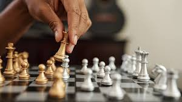

|  | Stanley was taught how to play chess in 2015 at Wisdom Junior School Nansana by a tutor who was a lecturer at Makerere University. Stanley learnt chess gaming and developed passion in it becoming one of the best students that year. When asked why he loved chess a lot Stanley's response was "I like playing chess because it helps me think what my enemy is all about and how to play with the world. " |